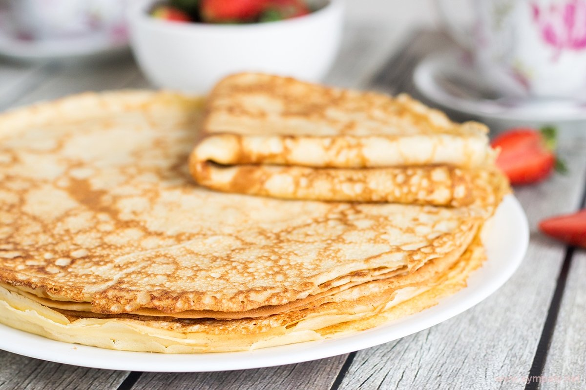

Блины
Делимся с Вами традиционным и самым лучшим рецептом очень тонких и вкусных блинчиков на молоке. Они получаются даже у тех, кто блины никогда не готовил.
Продукты
- Молоко - 0,5 л.
- Яйца - 3 шт.
- Масло растительное - 1 ст. ложка + для смазывания сковороды.
- Мука - 250 г
- Сахар - 1 ст. ложка.
- Соль - 1 щепотка.
- Масло сливочное - 1 ст. ложка.
Пошаговый рецпет
- Смешайте яйца, соль, сахар и размешайте миксером. Введите муку и влейте молоко. Взбейте блинное тесто, чтобы добиться однородной консистенции.
- Следом отправьте в тесто растительное масло, чтобы блины в момент жарки легко переворачивались и не пригорали.
- Разогрейте сковородку и смажьте маслом.
- Налейте в центр сковородки небольшую порцию теста. Сразу же вращайте сковородку по кругу, чтобы тесто равномерно распределилось по всей поверхности.
- Жарим блины на среднем огне с обеих сторон до зарумянивания. Блины очень тонкие, поэтому переворачивайте их аккуратно с помощью лопатки. После того, как блин будет готов, снимите со сковородки и смажьте сливочным маслом, чтобы края не были сухими, а блины получились нежными.
Блины на молоке можно подавать с вареньем, джемом или сгущенкой. Приятного аппетита!